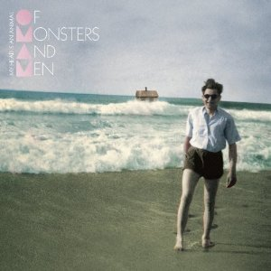

My Head Is an Animal

"My Head is an Animal" by Of Monsters and Men is a captivating debut album that catapulted the Icelandic indie folk-pop band into international acclaim upon its release in 2011. The album is a whimsical journey through lush, melodic landscapes, showcasing the band's signature blend of anthemic choruses, enchanting instrumentation, and dual vocals by Nanna Bryndís Hilmarsdóttir and Ragnar Þórhallsson. Songs like "Little Talks" and "Dirty Paws" exemplify the album's ability to seamlessly blend folk-inspired storytelling with infectious pop sensibilities. The narratives within the lyrics often carry a fairy-tale quality, creating a sense of wonder and introspection. "My Head is an Animal" is a celebration of both the grand and the intimate, marked by its harmonious instrumentation and the band's ability to create a sonic atmosphere that feels simultaneously epic and intimate. The album's universal appeal lies in its ability to evoke a range of emotions, making it a standout in the indie folk genre.